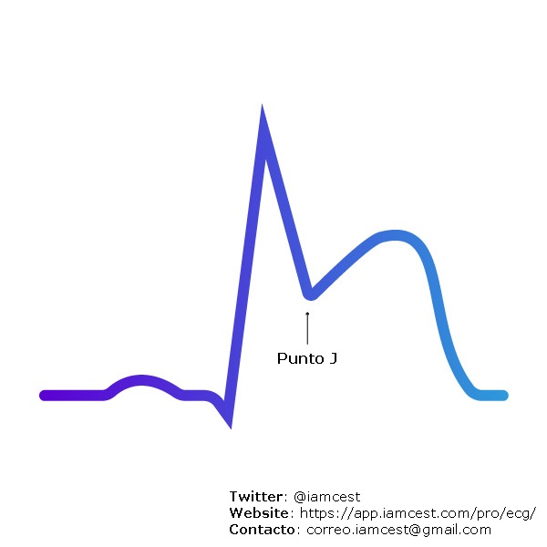
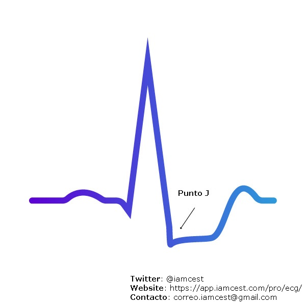

ECG Básico
Guía de interpretación ECG
Dedicados a simplificar conceptos básicos en un lenguaje sencillo y claro
Dedicados a simplificar conceptos básicos en un lenguaje sencillo y claro
P,Q,R,S,T
En un registro ECG normal, se podrá visualizar con claridad, cada una de ellas.P se registra cuando se produce la despolarización de las Aurículas. Habitualmente es Positiva enb todas las derivaciones [Eje de la Onda P +60°] excepto en V1QRS representa el registro eléctrico de la Despolarización de ambos Ventrículos. En el ECG normal no supera los 120 milisegundos. Recordar siempre que en el complejo QRS, la primer onda negativa se llama Q, la primer onda positiva se llama R segunda onda negativa es S Si luego de la onda P no se continúa con una onda positiva R y es negativa, se denomina S es negativa T acompaña el complejo QRS y representa la Repolarización ventricular
habitualmente es una onda positiva.
Intervalos
| Electrodos | Cara que visualiza |
|---|---|
II, III, AVF |
Inferior |
I, aVL, V5, V6 |
Lateral |
V3, V4 |
Anterior |
V1, V2 |
Septal |
PQ su medida máxima normal es de 200 milisegundos. Si se prolonga Bloqueo AV de primer grado.QRS no debe excederse de los 120 milisegundos. En caso de superar esos valores estamos en presencia de bloqueos de RAMA [BCRI Bloqueo completo de Rama Izquierda - BCRD Bloqueo completo de Rama Derecha].QT se prolonga desde es inicio de la Onda Q hasta el final de la Onda T habitualmente no supera los 440 milisegundos QTc se utiliza para medir y corregir la duración del intervalo.RR representa la distancia entre 2 despolarizaciones QRS útil para medir la frecuencia cardíaca. Tener en cuenta que la distancia entre RR sea siempre igual. En caso de irregularidad podría tratarse de una Fibrilación Auricular.PP útil medir para diagnósticos de bloqueos en el Nodo AV.
Intervaos

Sistemna de Conducción
QRS es mayor a 120 milisegundosQRS y de la onda T en el electrodo V1 y V6 Es posible diferenciar entre uno y otro.QRS es mayor 120 milisegundos y la R es positiva + T positiva en V1 se trata de un Bloqueo Completo de Rama Derecha. Si esos cambios ocurren en V6 se trata de un Bloqueo Completo de Rama Izquierda.
QRS > 120 milisegundos + R Positivo + T Negativo

QRS > 120 milisegundos + R Negativo + T positivo
S-T llamado IAMCEST o Infarto de Miocardio con Elevación del Segmento ST la otra forma es Sin elevación del segmento T se llama Infarto Agudo de Miocardio Sin Elevación del Segmento ST.| IAMCEST | IAMSEST |
|---|---|
| Oclusión total de la arteria coronaria | Oclusión parcial de la arteria coronaria |
|  |  |
Supra Desnivel del ST |
Infra Desnivel del ST |
| Aumento de los marcadores cardiológicos | Aumento de los marcadores cardiológicos |
ST في الالكترود V2-V3
بمقدار لا يزيد عن ١-٢ مم.ST ارتفاعاً باثولوجي , أي أنه قد يدل
على المرض , يجب أن يكون الارتفاع في الكترودين متتاليين في التخطيط.II, III, AVF تدلنا على المنطقة السفلى من القلب inferior ووجود ارتفاع ST
هنالك يدل على وجود احتشاء في هذه المنطقة.ST انخفاضاً في ال ST في
المنطقة المقابلة لهذا الالكترود.J point هي نقطة التقاء ال QRS بخط ال ST. في تشخيص حالات
الاحتشاء نقوم باستخدام ال J point كمقياس لمدى ارتفاع ST و نقوم بمقارنتها
بخط الاستواء الكهربي Isoelectrical line الذي يكون بالعادة في نفس مستوى مسافة T-P.Q كمقياس لخط الاستواء الكهربي.V2 , V3، أي ارتفاع في ال ST يزيد عن ١ مم في الكترودين متتاليين
أو أكثر يرجح الكفة لتشخيص الاحتشاء القلبي.V2 , V3 بارتفاع يزيد عن ٢ مم (١,٥ مم في الإناث) يعتبر باثولوجي أن وجد في
الكترودين متتاليين أو أكثر. بالنسبة للبالغين الذكور دون ٤٠ سنة فالحد هنا هو ٢,٥ ممST في الالكترودين V1 , V2 قد يكون دلالة على ارتفاع في ال
ST في المنطقة الخلفية للقلب حيث لا نقوم بالعادة بقياس التخطيط من تلك المنطقة. في هذه
الحالة يحبذ أخذ تخطيط خلفي أيضا بالكترودين أو ثلاثة لاستبعاد احتمالية وجود احتشاء في تلك المنطقة.Q في التخطيط بعمق أكبر من 2 مم او بعمق أكبر من ٢٥% من ارتفاع QRS
يدل على وجود احتشاء قديم خصوصا أن تمت ملاحظته في موضعين متتاليين في التخطيط. لكن وجودها في تخطيط
إضافة إلى وجود ارتفاع في ال ST يرجح بشدة وجود احتشاء جديد إضافة انه يزيد من خطورة
Prognosis للمرض.ST في اغلب أجزاء التخطيط مع وجود الأعراض يرجح وجود انسداد في أكثر
من شريان تاجي.
ST segment elevation
ST.ST اضافة الى موجة T مرتفعة مقارنة بال QRS
.
نمط دي وينتر في الانسداد الكامل للشريان LAD
T سالبة عميقة في الالكترودين V1, V2 . او تكون
موجة T موجبة في بدايتها و سالبة في نهايتها اضافة لكونها عميقة.
النمط الأول من علامة ويلن حيث يلاحظ موجة T عميقة

النمط الثاني من علامة ويلن حيث يلاحظ موجة T تكون في بداياتها موجبة ثم سالبة
T اللتي تكون سالبة
لديهم في بعض أجزاء التخطيط مع نوع من الارتفاع أو الانخفاض في منطقة ST مما يجعل تشخيص
الارتفاع أو الانخفاض في هذه المنطقة صعبا. QRS موجبة و ارتفعت ال ST عند نقطة J أكثر
من ١ مم QRS سالبة و انخفضت ال ST عند ال J
بأكثر من ١ ممQRS موجبة و ST سالبة و بالعكس أكثر من
٥ مم. ST عند نقطة J أو
موجة T سالبة في أكثر من موضع في التخطيط. 
ST segment depression
ST في كل أجزاء التخطيط. ST مميز أيضا حيث يمكن تشبيهه بحبل ممسوك من طرفيه و تم ارخائه قليلاً.
PR يلاحظ في بعض المرضى.R. تعرف هذه الظاهرة ب Electrical
alternans. 
الشكل المميز لتخطيط التهاب غشاء عضلة القلب. لاحظ شكل الحبل المرخي المشار اليه بالسهم
T سالبة في اغلب أجزاء التخطيط. P في التخطيط. RR بين كل نبضة و أخرى (Irregularly irregular). 
الرجفان الأذيني. لاحظ عدم وجود موجة P اضافة لعدم تساوي المسافات بين كل QRS.
QRS تشبه في شكلها اسنان
المنشار. إذا كانت أسنان المنشار متجهة للاسفل في الالكترودات السفلية من التخطيط أي II ,III, AVF
فيكون نوع الرفرفة الاذينية عكس عقارب الساعة Counter clockwise و العكس صحيح.
الرفرفة الأذينية. لاحظ شكل أسنان المنشار بين كل QRS.
P قبل كل QRS . كلما زادت سرعة معدل ضربات القلب صعبت
ملاحظة ال P حيث انها قد تكون مختفية تحت موجة T.R-R متساوية.P و حتى يتم التفريق ما بين Sinus tachycardia
وغيرها من الاضطرابات الكهربية يمكن عمل نوع خاص من التخطيط يعرف بالتخطيط القلبي البلعومي Esophageal
ECG لمعرفة موضع موجة P .
من الممكن ملاحظ موجة ال P بعد كل موجة T.
P مقارنة بالموجات الطبيعية الصادرة
من SA node.QRS بعرض طبيعي أي أقل من ١٢٠ ملي ثانية.P سالبة في كل أجزاء التخطيط و صاحب هذا التغير تسارعاً في ضربات
القلب اذا نستنتج ان مصدرها هو من الاذين.
وجود موجة P غريبة الشكل في نظم متسارع مقارنة بموجات P الاخرى في النظم الطبيعي في نفس التخطيط يرجح التشخيص.
P يمكن مشاهدتها بعد ال QRS .P بعد ال QRS لذا ينبغى في بعض الاحيان عمل
تخطيط قلبي بلعومي للتأكد من مكان ال P بعد ال QRS.
لاحظ وجود نتوء سلبي بعد كل QRS.
QRS اقل من ١٢٠ ملي ثانية.QRS
طبيعية العرض اضافة لعدم وجودة اي علاقة ما بين موجات P و QRS في التخطيط .
نمط junctional في حالة 3rd degree AV Block. لاحظ عدم وجود علاقة ما بين موجات P و QRS.
QRS اكبر من
١٢٠ ملي ثانية.QRS
اكبر من ١٢٠ مم اضافة لعدم وجودة اي علاقة ما بين موجات P و QRS في التخطيط
.
نمط ventricular في حالة 3rd degree AV Block. لاحظ عدم وجود علاقة ما بين موجات P و QRS.
QRS طبيعية و غير عريضة أي اقل من ١٢٠ ملي ثانية.T في النبضة السابقة قد
يحصل هناك توقف عن ارسال الشحنات في المسار الأيمن Right bundle branch بسبب انها لا تزال في ال
Refractory Period و ينتج ان يكون شكل ال QRS اعرض من الطبيعي بشكل RBBB.T في النبضة السابقة قد يحصل هناك توقف عن
ارسال الشحنات في كلا المسارين Right /left bundle branches مما يؤدي لعدم مرور النبضة للبطين، و ينتج
أن يكون فيما بعدها توقف لحظي عن ارسال الشحنات .
نبضة أذينية زائدة. لاحظ وجود موجة P قبل النبضة الزائدة والتي قد يكون شكلها مختلفا عن موجة P الطبيعية.
QRS عريضة أي اكبر من
١٢٠ مم.
نبضة بطينية زائدة. لاحظ عدم وجود P قبل الQRS اضافة الى عرض مسافة QRS مقارنة بالطبيعة.
QRS يكون أكبر من ١٢٠ ملي ثانية. QRS في التخطيط.